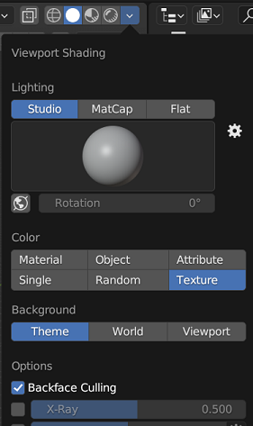

Blender - Tips & Hot Keys
Things to take note of when using Blender
Set up
-
Always enable backface culling.

-
Enable Absolute Grid Snapping
-
Add Ons to enable (Edit -> Preferences -> Add Ons)
- Mesh: Auto Mirror
- Mesh: LoopTool
- Bone Manager
Shortcuts
-
Navigating 3D Scene
Navigate the scene using the mouse
- Middle Mouse = pivot
- Shift + Middle Mouse = pan
- Ctrl + Middle Mouse or Scroll = zoom
Use Numpad or Ctrl+Numpad to change scene angle
-
Manipulating 3D Object
Basic Keys include G - Grab / Move, S - Scale, R - Rotate
Additionally, after pressing the above keys, you can use do the following:
- press x, y, z to move on particular axis
- press shift + x/y/z to exclude the particular axis
To move precise units, press G followed by axis x/y/z and key in the number (eg. 1) then press Enter
-
Object/Edit Mode
Use Tab –> toggle between edit/object mode
In Edit Mode
- 1, 2, 3 –> change select mode between vertex, edge and face
-
Editing Geometry
In Edit Mode
- 1, 2, 3 –> change select mode between vertex, edge and face
- Shift + A –> Add Geometry Menu
- e –> extrude
- ctrl + r –> add loop cut
- left click to confirm
- right click to be added in the center
- scroll to add more loop cut before confirming
- a –> select all the vertices
- Alt + A / aa –> Deselect
- Alt + Select –> select a loop
- ctrl + numpad+ or ctrl + numpad- to increase selection
- k for knife tool
In Object Mode
- x –> delete object
- Shift + d to duplicate object
Tips
-
Connecting 2 Edges
- In Edit Mode, Use Edge Select 2
- Alt + Click to select first edge
- Alt + Shift + Click to select second edge
- Right Click -> Bridge Edge Loops to create faces to connect the edges
-
Wireframe mode
- In Edit Mode, Use Vertex Select 1
- Press z and select wireframe
- Now, click and drag to select multiple vertices
-
Navigate Scene Focus
- Click on a Vertex in Edit Mode
- Click on del in numpad to set the focus on that
-
Linking Materials
- In Object Mode
- Create Material on an object
- Shift Select all objects followed by the object with the material (last)
- Ctrl + L (links menu) -> Materials
-
Setting Camera
- In Object Mode
- Click on Ctrl + Alt + 0 to shift the camera to where you are looking at
- Click on the camera grid, G + Middle Mouse Click to zoom in and out the camera
-
Sculpting Objects
- In Sculting Mode, go to properties bar, under Active Tools & Workspace Settings -> DynoTopo
- Set Detailing to Constant Detail and Resolution to 0.75 for low poly
- Click on f to change brush size
- Click on Shift + f to change intensity of brush
- Click on Ctrl + left click to invert (create dent)
- Click on Shift + left click to flatten
-
Vertex Paint Mode (Painting Parts of Object)
- In Edit Mode, use Face Select + c to select an area
- In Vertex Paint Mode, use Face Paint to show the area
- Note that this will only create color attribute, to view the color in object mode
- set viewport shading to Material Preview (top right)
- create a new material
- open a new tab, shader editor, add a Color Attribute and connect the base color
-
Create Faces on Vertices/Edges
- In Edit Mode, use Vertex/Edge Select and shift select your vertices/edges
- Click on f to create a face to fill the space
-
Smoothing out the model (Edge Slide)
- In Edit Mode, use Edge Select and Alt + Select to slide an edge
- Click on gg to smooth out the model
-
Duplicate and Separate the object
- In Edit Mode, select the faces you want
- Shift D + Right Click to duplicate
- p to separate into its own object
-
UV Mapping
- In UV Layout, in Edit Mode, use Edge Select and Click on seams
- Use Ctrl + E to open Edge Menu and select Mark Seam
- Click on UV menu and select unwrap
- In UV Layout, in Edit Mode, use Edge Select and Click on seams
-
Texture Painting
- In Texture Painting Window, use edit mode to select the faces, texture mode to apply the colour on uv map
- In Texture Image Paint Window (left), remember to use Alt + S to save the texture image
-
Rigging the model
- when rigging body mesh,
- select click on body mesh, shift select armature, then press Ctrl + P and select Set Parent To - Armature Deform - with automatic weight
- To symmetrize bones
- make sure you name the bones with .L
- In Edit Mode, select the bones, Right Click and select Symmetrize
- To weight painting
- In Object mode, select the armature, and Shift + Select the mesh and select Weight Painting Mode
- Hold Ctrl/Shift and Select a bone to view the weight of the bone
- When rigging clothes, instead of weight painting, link it to your right by doing the following:
- In Object mode, Click on clothes, shift select body mesh, then Ctrl + L –> Transform Data Mesh. In the options,
- Data Type: Vertex Group(s)
- Vertex Mapping: Nearest Vertex
- Source Layer Select: All Layers
- Add a Armature modifier to the clothes
- Set object to your armature rig
- Check Preserve Volume
- Check Vertex Groups
- In Object mode, Click on clothes, shift select body mesh, then Ctrl + L –> Transform Data Mesh. In the options,
- Using Bone Layers
- In Pose Mode, Shift Select the bones, m to move the bones into a different bone layer
- when rigging body mesh,
-
Animation
- In Animation Window
- In the bottom frame window, select Action Editor
- Creating T Pose Action:
- Click on character, select armature, change to pose mode
- Create a new action called _TPose and enable Fake User (shield icon)
- select all bones (a), and press I to insert key frames - location & rotation
- Create Other Actions…
- Shift + Left Arrow – goes back to first frame
- If you don’t see your keyframes, make sure you select all bones in your armature
- Shift + D to duplicate keyframes
- Change the Keyframe Start and End accordingly
- For looping animation (idle/walk/run), select all keyframes, Shift E and select Make Cyclic (F-Modifier) –> this will make the animation loop even after your last keyframe
- Spacebar to play and stop
- Ctrl C + Ctrl + Shift + V to paste the keyframes but mirrored (usually for walk/run)
- Tips:
- To mirror pose action, shift select on left bones, Ctrl + C, shift select the right bones, and Ctrl + Shift + V
Modifiers
- Mirror Modifier
- Array Modifier - duplicates object and make sure changing one, change all when its duplicated